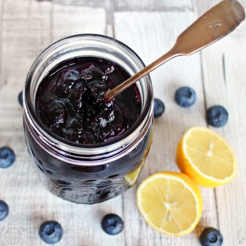

Blueberry Jam

Description
This blueberry jam recipe is simple and easy to make. The delicious flavor of sweet, fresh blueberries takes center stage. Perfect for PBJs, deserts, or really anything you'd like.
It tastes out of this world good, no wonder it's so popular!
Ingredients
- 4 cups fresh blueberries
- 1 cup white sugar
- 1 tablespoon fresh lemon juice
- 1 pinch ground cinnamon
Steps
- Mix blueberries, sugar, lemon juice, and cinnamon in a saucepan.
- Cook, stirring constantly, over medium heat until thickened, about 30 minutes.
- Let cool and serve!